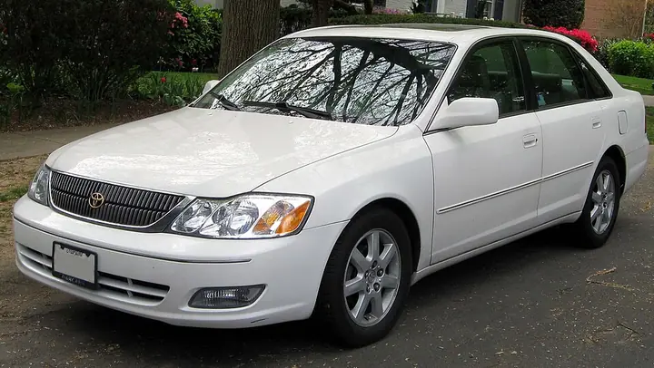
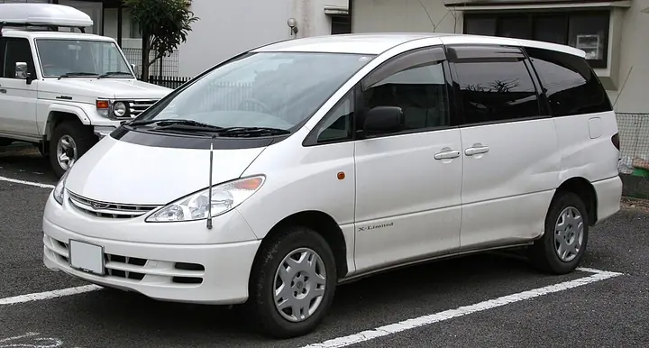
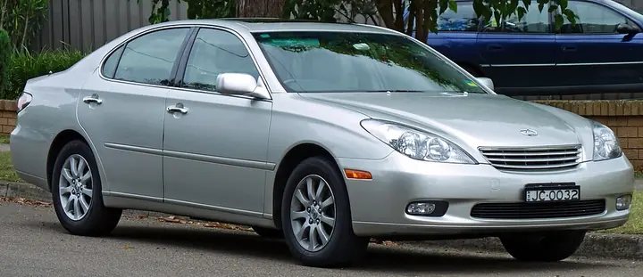
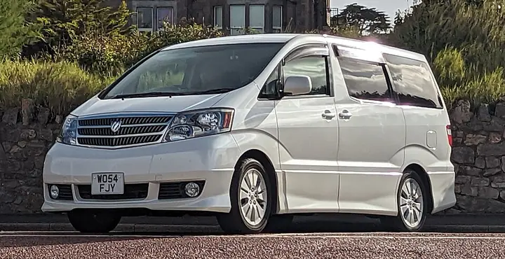
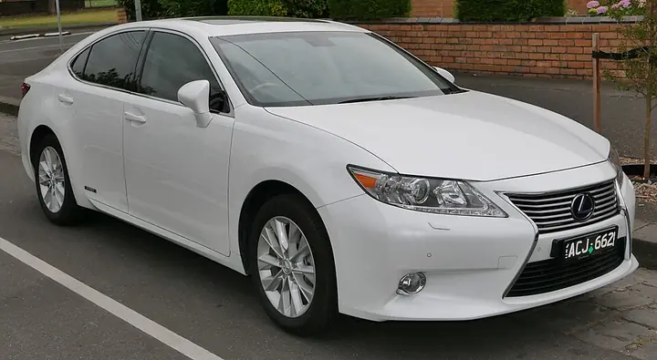

Platform
Toyota K
23 generations of 11 models by Toyota and Lexus, 1999–2022.
The cars

Toyota Avalon · Second generation (XX20; 1999)- Toyota Highlander · First generation (XU20; 2000)

Toyota Previa · Second generation (XR30/XR40; 2000)
Lexus ES · Fourth generation (XV30; 2001)- Toyota Camry · XV30 (2001–2006)

Toyota Alphard · First generation (AH10; 2002)- Lexus RX · Second generation (XU30; 2003)
 Toyota Camry Solara · Second generation (XV30; 2003–2008)
Toyota Camry Solara · Second generation (XV30; 2003–2008)- Toyota Sienna · Second generation (XL20; 2003)
- Toyota Avalon · Third generation (XX30; 2004)
- Lexus ES · Fifth generation (XV40; 2006)
 Toyota Aurion · First generation (XV40; 2006)
Toyota Aurion · First generation (XV40; 2006)- Toyota Camry · XV40 (2006–2012)
- Toyota Highlander · Second generation (XU40; 2007)
- Lexus RX · Third generation (AL10; 2008)
- Toyota Venza · First generation (AV10; 2008)
- Toyota Sienna · Third generation (XL30; 2010)
 Toyota Aurion · Second generation (XV50; 2011)
Toyota Aurion · Second generation (XV50; 2011)- Toyota Camry · XV50 (2011–2019)

Lexus ES · Sixth generation (XV60; 2012)- Toyota Avalon · Fourth generation (XX40; 2012)
- Toyota Highlander · Third generation (XU50; 2013)
- Lexus RX · Fourth generation (AL20; 2015)